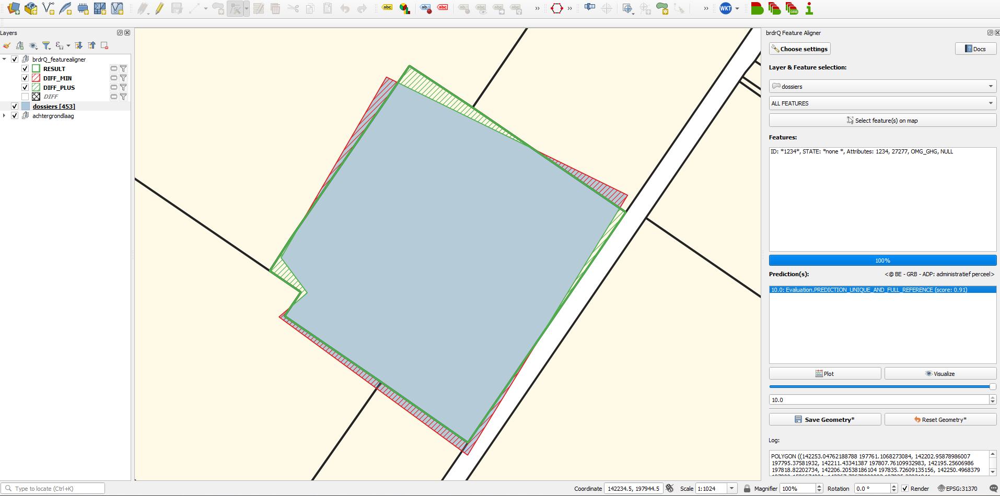

FeatureAligner
Documentatie van QGIS Python-plugin brdrQ: FeatureAligner
Video
Instructies

- Kies de instellingen voor de uitlijning (referentielaag, …).
- Selecteer de thematische laag die je wil uitlijnen.
- Selecteer een feature in de lijst of via
Select feature(s) on map. - Bekijk de voorspelling(en) voor deze feature.
Daarnaast kan je:
- Wisselen tussen meerdere voorspellingen (via lijst, slider of spinbox).
- Plot: een plot opvragen van deze voorspellingen (relevante afstand (m) vs. wijziging (m²)).
- Visualize: de voorspelde relevante afstanden naast elkaar visualiseren.
- Save Geometry: de originele geometrie aanpassen naar de gekozen voorspelling.
- Reset Geometry: de originele geometrie resetten (alleen binnen een feature-sessie, dus zolang je geen andere feature selecteert).
Parametergids
Elke parameter wordt eenduidig uitgelegd met: Definitie, Waarom gebruiken, Mogelijke keuzes, en Gevolg.
Reference Layer
- Definitie: Doeldataset die als geometrische referentie gebruikt wordt.
- Waarom gebruiken: Bepaalt wat in jouw context als “correct uitgelijnd” geldt.
- Mogelijke keuzes: Lokale referentielaag of on-the-fly referenties (bv. GRB/OSM, afhankelijk van je setup).
- Gevolg: Betere referentiekwaliteit geeft betere voorspellingen.
Open Domain Strategy
- Definitie: Gedrag voor delen van geometrie buiten de referentiedekking (Open Domain).
- Waarom gebruiken: Stuurt beleid rond behouden, uitsluiten of verschuiven van niet-gedekte delen.
- Mogelijke keuzes:
EXCLUDE,ASIS,SNAP_INNER_SIDE,SNAP_ALL_SIDE. - Gevolg: Heeft directe impact op de semantiek van de grens.
Processor
- Definitie: Keuze van de verwerkingsengine.
- Waarom gebruiken: Optimaliseert performantie en robuustheid volgens geometrietype.
- Mogelijke keuzes:
AlignerGeometryProcessor(aanbevolen), of alternatieven indien nodig. - Gevolg: Een juiste processor verhoogt stabiliteit en snelheid.
Threshold overlap percentage (%)
- Definitie: Fallback overlapdrempel bij twijfel over relevantie.
- Waarom gebruiken: Maakt beslissingen consistenter in randgevallen.
- Mogelijke keuzes:
0-100(vaak rond50). - Gevolg: Hogere waarden zijn strenger, lagere waarden toleranter.
Maximal relevant distance (m)
- Definitie: Maximale afstand (meter) waarin kandidaatvoorspellingen gezocht worden.
- Waarom gebruiken: Begrenst hoe ver een geometrie mag verschuiven.
- Mogelijke keuzes: laag (
1-2), midden (3-5), hoog (>10) volgens datakwaliteit. - Gevolg: Hogere waarden vergroten zowel de zoekruimte als ambiguiteit.
Add brdr_metadata?
- Definitie: Voegt
brdr_metadatatoe aan de outputfeature. - Waarom gebruiken: Bewaart herkomstinformatie voor audit en latere updates.
- Mogelijke keuzes: aan/uit.
- Gevolg: Betere traceerbaarheid met beperkte extra opslag.
Full Reference Strategy
- Definitie: Voorkeursregeling voor kandidaten met volledige referentie-overlap.
- Waarom gebruiken: Verhoogt vertrouwen in de gekozen voorspelling.
- Mogelijke keuzes:
ONLY_FULL_REFERENCE,PREFER_FULL_REFERENCE,NO_FULL_REFERENCE. - Gevolg: Striktere instellingen verlagen risico, maar beperken alternatieven.
Snap Strategy
- Definitie: Snap-striktheid naar referentievertices (vooral bij lijn/punt-workflows).
- Waarom gebruiken: Stuurt geometrische precisie op hoek- en eindpunten.
- Mogelijke keuzes:
NO_PREFERENCE,PREFER_VERTICES,PREFER_ENDS_AND_ANGLES,ONLY_VERTICES. - Gevolg: Striktere snapping verbetert topologie, maar kan minder matches opleveren.
Aanbevolen presets
- Voorzichtige bewerking: low distance + PREFER_FULL_REFERENCE.
- Gebalanceerd dagelijks gebruik: medium distance + default processor + PREFER_VERTICES.
- Sterke correctie voor ruwe data: higher distance + permissive full-reference mode.
- Strikte netwerk-snapping: ONLY_VERTICES + low distance.